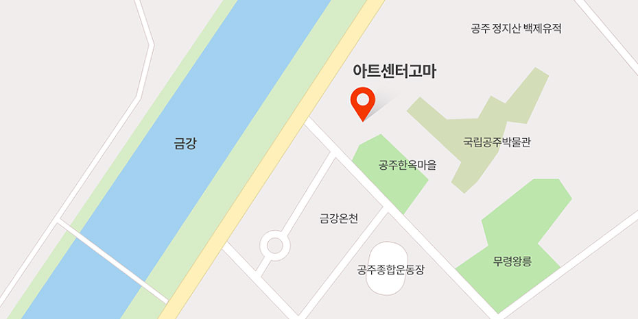

(공주문화관광재단) 아트센터 고마(공주정신건강학술문화제 행사장)
주소 충남 공주시 고마나루길 90
-
 자가용
자가용
- 호남고속도로
유성IC → 공주방향(32번 국도) → 청벽대교 → 무령왕릉 → 고마
- 천안논산고속도로
정안IC → 공주IC교차로, 공주방면 → 백제큰다리 → 정지산터널 → 고마
- 대전방면
대전 → 유성 → 공주방향(32번국도) → 마티터널 → 청벽대교 → 무령왕릉 → 고마
- 청주, 세종시
청주 → 세종시 → 대전방향(1번 국도) → 96번 지방ㄷ → 공주방향(32번국도) → 백제큰다리 → 정지산터널 → 고마
- 호남고속도로
-
 대중교통
대중교통
-
시내버스1시간 간격
공주대학교 후문 → 공주박물관 행(32번 국도)
-
고속버스30분 간격
서울 강남터미널(서울 ↔ 공주)
-
직행버스10분 간격
서울 남부터미널(서울 ↔ 공주)
-
직행버스5분 간격
대전(동부,서부,유성 ↔ 공주) 5분 간격
-

안내
041-850-5916